(2).png)
Odontologia estética humanizada focada no seu conforto emocional e na excelência técnica. Transformando sorrisos com acolhimento e naturalidade.
Falar com a EquipePara garantir uma consulta focada 100% em você e com tempo de qualidade, não aceitamos planos de saúde ou convênios. (Emitimos recibo para reembolso).
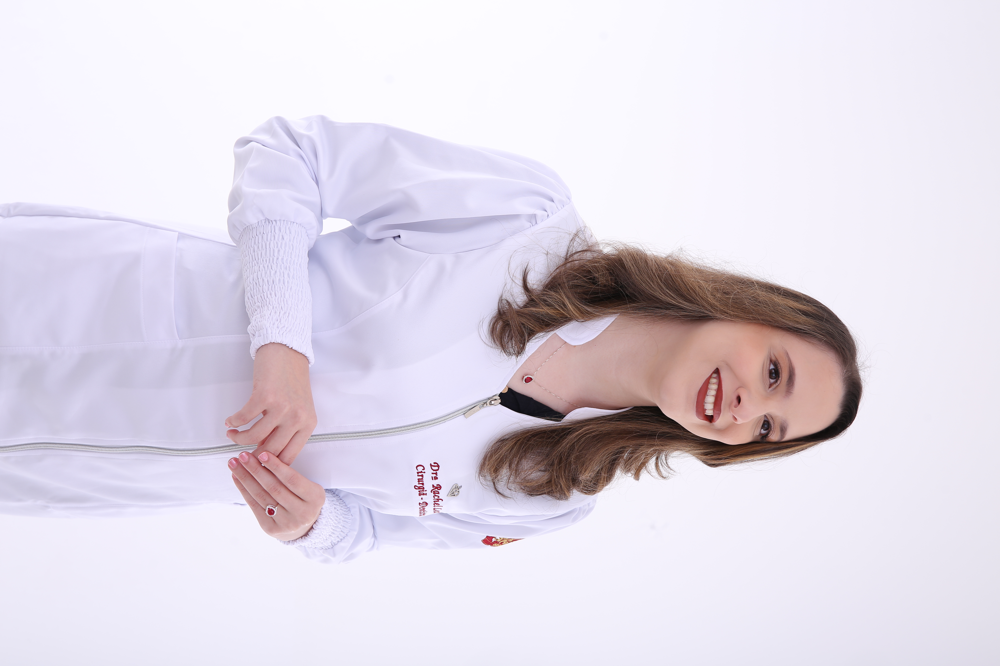
Existe um tipo de paciente que eu entendo profundamente: aquele que evita sorrir em fotos por vergonha e que carrega o desconforto de ter adiado o cuidado com o sorriso.
Quando pequena, sentia pânico de dentista. Usei aparelho por 8 anos e chorava antes de cada consulta. Foi esse medo que me fez decidir a odontologia — para ser, hoje, a dentista que acolhe com calma, sem pressa e sem julgamentos.
A maioria dos consultórios foca só no resultado estético. A Dra. Rachel trabalha com dois pilares, sempre juntos: o acolhimento emocional de quem já teve uma experiência ruim com dentista, e a excelência técnica em cada tipo de procedimento.
Isso significa que, antes de decidir qualquer coisa, você conversa com a Dra. parte por parte do seu tratamento. Sem cobrança por ter demorado a cuidar do sorriso, sem termos técnicos difíceis de entender. Você entende cada etapa, no seu tempo.
O resultado não é só um sorriso mais bonito. É poder sorrir sem pensar duas vezes — nas fotos, nas reuniões, nos encontros.
Trabalho com dois pilares inegociáveis: o conforto emocional do paciente e a precisão técnica nos mínimos detalhes, usando equipamentos como ultrassom de última geração.
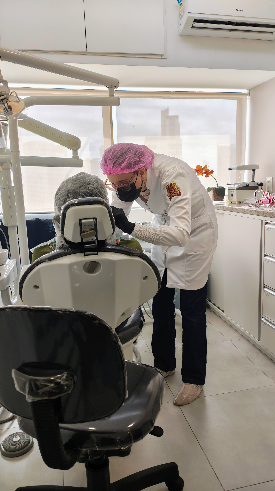
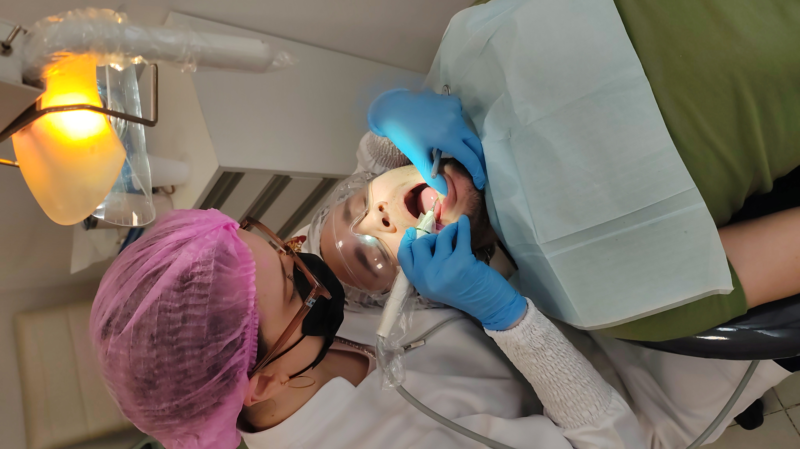
.jpg)
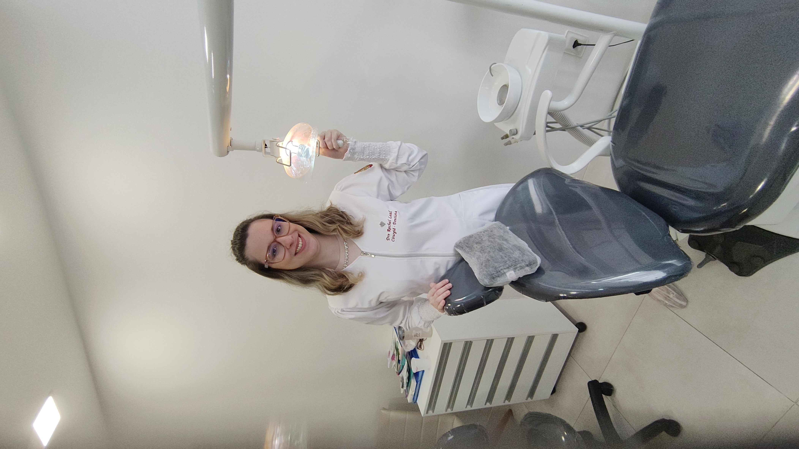

Cuidado odontológico completo, unindo saúde, funcionalidade e estética para o seu sorriso.
Aquele dente que parece sempre "amarelado" nas fotos, mesmo com escovação em dia, tem solução simples. O clareamento dental em Recife feito com acompanhamento de perto reduz a sensibilidade e devolve a confiança de sorrir abertamente.
Para quem quer um sorriso mais alinhado e uniforme sem esperar meses ou fazer um procedimento invasivo, as facetas de resina em Recife são uma transformação visível em poucas sessões, com aparência natural.
Versão refinada para transformação do sorriso, indicada para quem busca resultado duradouro e estético. A Dra. Rachel explica com calma qual opção — resina ou porcelana — faz sentido pra sua rotina.
Feita sem julgamento e com equipamento ultrassônico, que remove o tártaro antigo por vibração sem a fricção incômoda dos instrumentos manuais, além de pastas de alta tecnologia contra manchas.
Quando um dente incomoda — seja cárie ou fratura pequena —, a restauração devolve função e estética sem chamar atenção. O objetivo é que ninguém perceba o reparo.
Para dentes mais desgastados ou danificados, a reconstrução devolve forma, proporção e naturalidade ao sorriso, mantendo a harmonia completa da arcada.
Quando o dente não tem estrutura suficiente para restauração simples, a coroa protege e devolve resistência total, sem abrir mão da estética natural.
Para quem sente pontada com gelado ou quente e deixou de aproveitar alimentos. Tratamento com cremes dessensibilizantes e vernizes fluoretados para você comer sem pensar duas vezes.
Manchas brancas ou amareladas superficiais tratadas com pasta levemente abrasiva, um procedimento simples que devolve a uniformidade perfeita ao esmalte do dente.
Antes de qualquer procedimento, uma conversa para entender seu sorriso, o que te incomoda e qual caminho faz sentido pro seu caso. O primeiro passo para recuperar sua alegria de sorrir.
Cada etapa do seu tratamento estético (seja clareamento, facetas ou restaurações) é explicada com total clareza. Você no controle do seu sorriso.
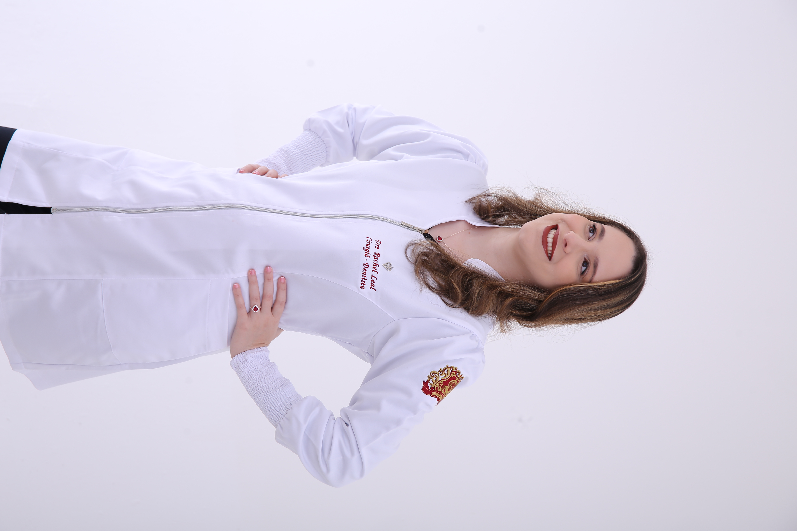
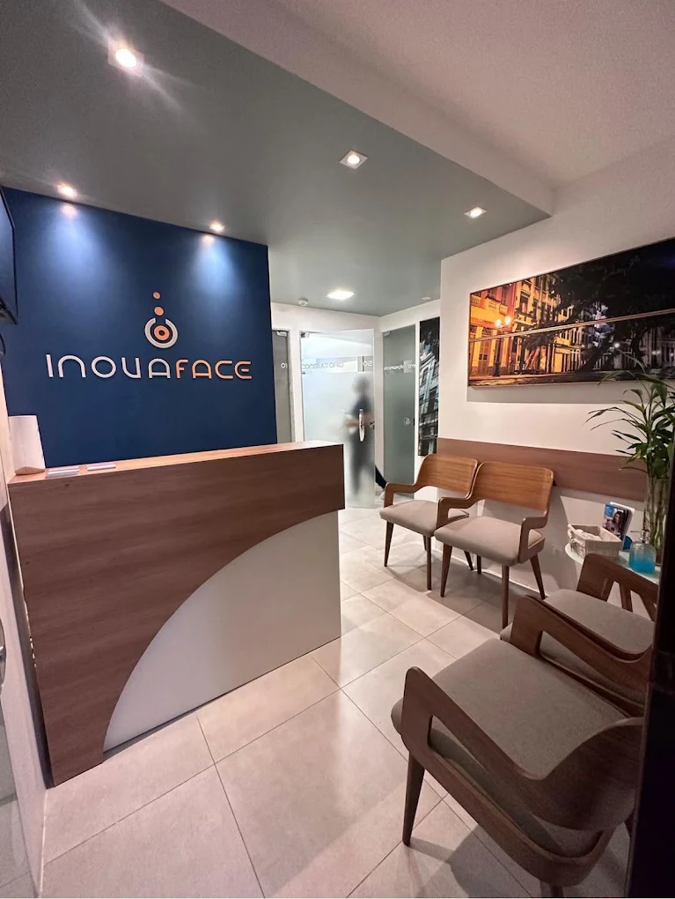

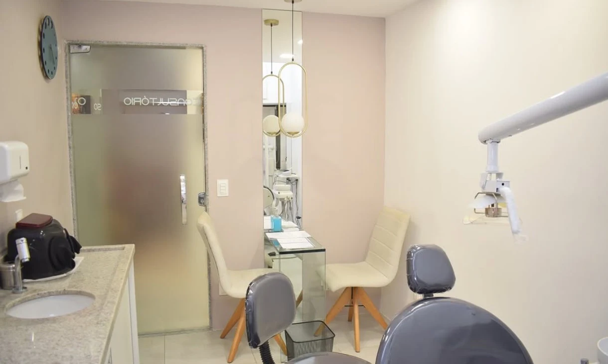
Acompanhe a devolução da estética, saúde e do tom natural.
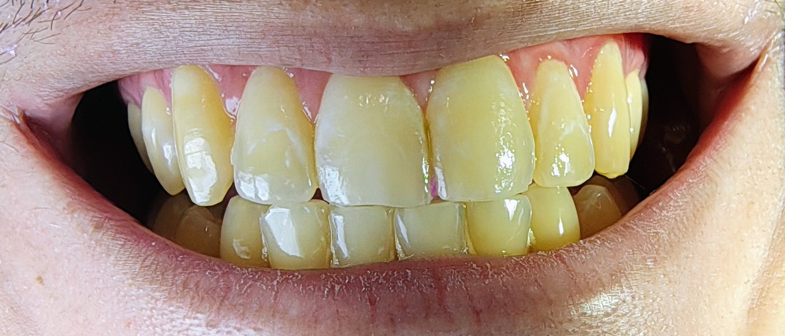
Pigmentação natural acentuada.
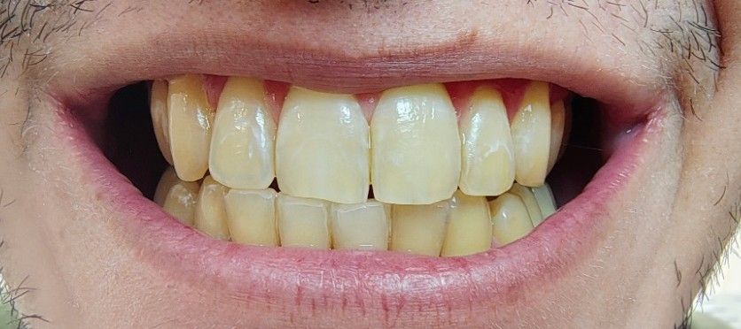
Clareamento em andamento seguro.
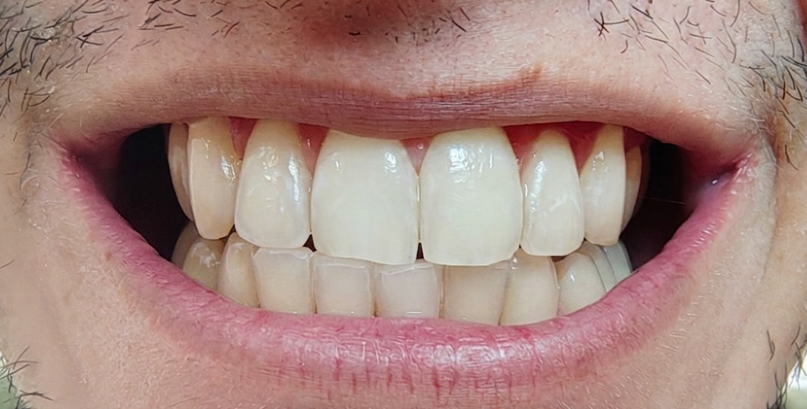
Sorriso radiante e iluminado.

Acúmulo de cálculo e inflamação gengival.

Gengiva saudável e dentes livres de tártaro.
* Imagens autorizadas. Os resultados na odontologia podem variar de acordo com as características biológicas individuais de cada paciente (Resolução CFO).
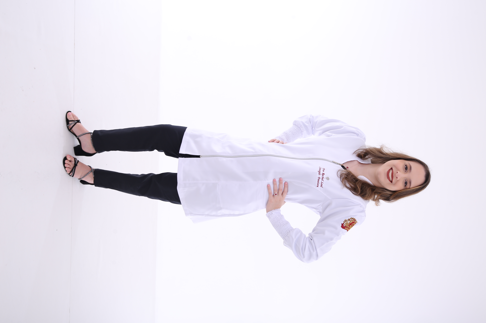
R. Frei Matias Teves, Nº 280 - Ilha do Leite
Sala 611 - Recife / PE